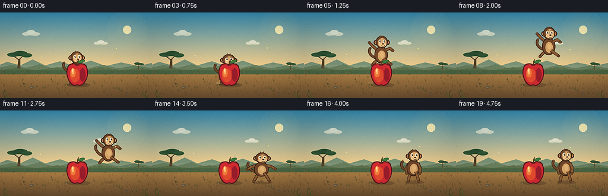
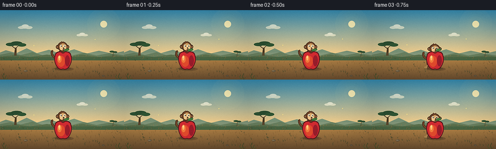

CODING AGENTS AS PIXEL WORLD MODELS
traex/DeepSeek-V4.1-Flash · dynamic_spatial_relationship_0052
点击播放 · 原生 RGB 像素
逐轮保存的候选
回放视频、检查图与代码变化。
每份候选均可单独播放。实际图片检查记录在下方工具轨迹中。
候选 01播放与检查图
点击播放 · 原生 RGB 像素

展开代码变化
--- 上一保存版本
+++ 本次保存版本
@@ -0,0 +1,453 @@
+from pathlib import Path
+import math
+
+import numpy as np
+from PIL import Image, ImageDraw, ImageFilter
+
+import artifact_io
+
+
+W, H = 256, 144
+SS = 4
+FPS = 4
+FRAMES = 20
+
+
+def mix(a, b, t):
+ return tuple(int(round(a[i] + (b[i] - a[i]) * t)) for i in range(3))
+
+
+def ease_in_out(p):
+ p = max(0.0, min(1.0, p))
+ if p < 0.5:
+ return 4.0 * p * p * p
+ return 1.0 - ((-2.0 * p + 2.0) ** 3) / 2.0
+
+
+def cubic_points(p0, p1, p2, p3, steps=20):
+ points = []
+ for i in range(1, steps + 1):
+ t = i / steps
+ u = 1.0 - t
+ x = u**3 * p0[0] + 3 * u * u * t * p1[0] + 3 * u * t * t * p2[0] + t**3 * p3[0]
+ y = u**3 * p0[1] + 3 * u * u * t * p1[1] + 3 * u * t * t * p2[1] + t**3 * p3[1]
+ points.append((x, y))
+ return points
+
+
+def rotated_ellipse(cx, cy, rx, ry, angle, steps=32):
+ ca, sa = math.cos(angle), math.sin(angle)
+ points = []
+ for i in range(steps):
+ t = 2.0 * math.pi * i / steps
+ x, y = rx * math.cos(t), ry * math.sin(t)
+ points.append((cx + x * ca - y * sa, cy + x * sa + y * ca))
+ return points
+
+
+class Canvas:
+ """Draw in logical 256x144 coordinates on a supersampled image."""
+
+ def __init__(self, image):
+ self.image = image
+ self.draw = ImageDraw.Draw(image, "RGBA")
+
+ def pt(self, point):
+ return (round(point[0] * SS), round(point[1] * SS))
+
+ def box(self, cx, cy, rx, ry):
+ return (
+ round((cx - rx) * SS),
+ round((cy - ry) * SS),
+ round((cx + rx) * SS),
+ round((cy + ry) * SS),
+ )
+
+ def ellipse(self, cx, cy, rx, ry, fill=None, outline=None, width=1.0):
+ self.draw.ellipse(
+ self.box(cx, cy, rx, ry),
+ fill=fill,
+ outline=outline,
+ width=max(1, round(width * SS)),
+ )
+
+ def polygon(self, points, fill=None, outline=None, width=1.0):
+ scaled = [self.pt(p) for p in points]
+ self.draw.polygon(
+ scaled,
+ fill=fill,
+ outline=outline,
+ width=max(1, round(width * SS)),
+ )
+
+ def line(self, points, fill, width=1.0, joint="curve"):
+ scaled = [self.pt(p) for p in points]
+ self.draw.line(
+ scaled,
+ fill=fill,
+ width=max(1, round(width * SS)),
+ joint=joint,
+ )
+
+ def arc(self, cx, cy, rx, ry, start, end, fill, width=1.0):
+ self.draw.arc(
+ self.box(cx, cy, rx, ry),
+ start,
+ end,
+ fill=fill,
+ width=max(1, round(width * SS)),
+ )
+
+
+def make_background(frame_index):
+ hh, ww = H * SS, W * SS
+ pixels = np.zeros((hh, ww, 3), dtype=np.uint8)
+ horizon = 91.0
+ sky_top = np.array((52, 137, 174), dtype=float)
+ sky_horizon = np.array((246, 207, 139), dtype=float)
+ soil_top = np.array((193, 142, 75), dtype=float)
+ soil_bottom = np.array((105, 77, 47), dtype=float)
+
+ for y in range(hh):
+ logical_y = y / SS
+ if logical_y < horizon:
+ t = min(1.0, logical_y / horizon)
+ color = sky_top * (1.0 - t) + sky_horizon * t
+ else:
+ t = min(1.0, (logical_y - horizon) / (H - horizon))
+ color = soil_top * (1.0 - t) + soil_bottom * t
+ pixels[y, :, :] = np.clip(color, 0, 255).astype(np.uint8)
+
+ image = Image.fromarray(pixels, "RGB").convert("RGBA")
+
+ glow = Image.new("RGBA", image.size, (0, 0, 0, 0))
+ gd = ImageDraw.Draw(glow, "RGBA")
+ sun_x, sun_y = 214 * SS, 29 * SS
+ for radius, alpha in ((34, 9), (27, 12), (21, 16), (16, 22)):
+ r = radius * SS
+ gd.ellipse((sun_x - r, sun_y - r, sun_x + r, sun_y + r), fill=(255, 233, 159, alpha))
+ gd.ellipse(
+ (sun_x - 7 * SS, sun_y - 7 * SS, sun_x + 7 * SS, sun_y + 7 * SS),
+ fill=(255, 239, 181, 235),
+ )
+ image = Image.alpha_composite(image, glow)
+
+ c = Canvas(image)
+
+ # Layered, hazy hills keep the horizon readable at this small size.
+ c.polygon(
+ [(-8, 91), (12, 83), (34, 89), (55, 79), (76, 89), (101, 82),
+ (124, 90), (153, 81), (178, 90), (204, 84), (233, 90), (264, 83),
+ (264, 98), (-8, 98)],
+ fill=(121, 147, 119, 255),
+ )
+ c.polygon(
+ [(-8, 94), (21, 88), (43, 93), (67, 87), (92, 95), (120, 88),
+ (145, 95), (173, 88), (199, 94), (226, 89), (264, 95), (264, 101),
+ (-8, 101)],
+ fill=(91, 119, 89, 255),
+ )
+ c.polygon(
+ [(-8, 97), (31, 93), (62, 97), (97, 92), (132, 98), (169, 92),
+ (205, 97), (236, 93), (264, 98), (264, 104), (-8, 104)],
+ fill=(74, 101, 67, 255),
+ )
+
+ # Warm grass field, with sparse directional strokes rather than a flat fill.
+ rng = np.random.default_rng(2205)
+ for _ in range(260):
+ x = rng.uniform(-2, 258)
+ y = rng.uniform(94, 141)
+ depth = (y - 94) / 47
+ length = rng.uniform(1.2, 4.2) * (0.65 + depth)
+ lean = rng.uniform(-1.5, 1.5)
+ base = mix((150, 105, 55), (82, 62, 39), depth)
+ color = (*mix(base, (190, 143, 73), rng.uniform(0.0, 0.25)), 160)
+ c.line([(x, y), (x + lean, y - length)], color, width=0.45)
+
+ for _ in range(46):
+ x = rng.uniform(4, 252)
+ y = rng.uniform(101, 138)
+ c.line([(x, y), (x - 1.2, y - rng.uniform(2.0, 4.2))], (67, 71, 43, 150), width=0.55)
+ c.line([(x, y), (x + 1.0, y - rng.uniform(1.6, 3.7))], (67, 71, 43, 135), width=0.5)
+
+ # A few small stones add scale without competing with the action.
+ c.ellipse(53, 126, 4.0, 2.1, fill=(119, 101, 73, 255), outline=(76, 66, 51, 255), width=0.55)
+ c.ellipse(51.5, 125.5, 2.0, 0.8, fill=(151, 128, 91, 255))
+ c.ellipse(213, 136, 2.7, 1.5, fill=(109, 91, 65, 255), outline=(71, 61, 47, 255), width=0.45)
+
+ # Acacia silhouettes anchor the savanna setting.
+ c.polygon([(29, 94), (31, 78), (34, 78), (34, 94)], fill=(74, 58, 35, 255))
+ c.line([(32, 80), (23, 73)], (74, 58, 35, 255), width=1.5)
+ c.line([(32, 79), (41, 71)], (74, 58, 35, 255), width=1.5)
+ c.ellipse(22, 71, 10, 3.6, fill=(47, 83, 52, 255))
+ c.ellipse(34, 69, 12, 4.2, fill=(43, 77, 48, 255))
+ c.ellipse(45, 72, 9, 3.4, fill=(49, 86, 52, 255))
+
+ c.line([(233, 96), (234, 87)], (76, 59, 37, 255), width=1.0)
+ c.ellipse(231, 86, 5.0, 2.0, fill=(53, 87, 55, 255))
+ c.ellipse(237, 87, 5.0, 1.8, fill=(48, 81, 51, 255))
+
+ # Slow clouds create gentle life while the camera and ground stay fixed.
+ cloud_shift = frame_index * 0.18
+ for cloud_x, cloud_y, scale in ((51 - cloud_shift, 35, 1.0), (169 - cloud_shift * 0.65, 51, 0.78)):
+ cloud = Image.new("RGBA", image.size, (0, 0, 0, 0))
+ cd = ImageDraw.Draw(cloud, "RGBA")
+ cc = Canvas(cloud)
+ cc.ellipse(cloud_x, cloud_y, 11 * scale, 3.3 * scale, fill=(255, 246, 214, 160))
+ cc.ellipse(cloud_x - 7 * scale, cloud_y + 1 * scale, 7 * scale, 2.8 * scale, fill=(255, 247, 219, 150))
+ cc.ellipse(cloud_x + 8 * scale, cloud_y + 1 * scale, 8 * scale, 3.0 * scale, fill=(255, 246, 215, 150))
+ cc.ellipse(cloud_x + 1 * scale, cloud_y - 2.2 * scale, 7 * scale, 3.4 * scale, fill=(255, 249, 226, 170))
+ image = Image.alpha_composite(image, cloud)
+ c = Canvas(image)
+
+ # Fine horizon haze.
+ haze = Image.new("RGBA", image.size, (0, 0, 0, 0))
+ hd = ImageDraw.Draw(haze, "RGBA")
+ hd.rectangle((0, round(88 * SS), image.width, round(97 * SS)), fill=(255, 220, 160, 22))
+ image = Image.alpha_composite(image, haze)
+ return image
+
+
+def draw_shadow(image, cx, cy, rx, ry, alpha):
+ layer = Image.new("RGBA", image.size, (0, 0, 0, 0))
+ c = Canvas(layer)
+ c.ellipse(cx, cy, rx, ry, fill=(63, 45, 30, alpha))
+ return Image.alpha_composite(image, layer)
+
+
+def draw_dust(image, cx, cy, strength):
+ if strength <= 0:
+ return image
+ layer = Image.new("RGBA", image.size, (0, 0, 0, 0))
+ c = Canvas(layer)
+ a = int(105 * strength)
+ puffs = [(-12, -1, 4.4, 2.0), (-7, -3, 5.5, 2.6), (7, -2, 5.2, 2.4), (13, 0, 4.0, 1.8)]
+ for dx, dy, rx, ry in puffs:
+ c.ellipse(cx + dx, cy + dy, rx, ry, fill=(218, 179, 113, a))
+ return Image.alpha_composite(image, layer)
+
+
+def draw_monkey(image, cx, ground_y, pose, phase, scale_x=1.0, scale_y=1.0):
+ c = Canvas(image)
+ outline = (62, 40, 27, 255)
+ fur = (113, 71, 42, 255)
+ fur_light = (142, 91, 51, 255)
+ face = (214, 164, 103, 255)
+ muzzle = (238, 195, 137, 255)
+ inner_ear = (190, 129, 83, 255)
+
+ def tr(dx, dy):
+ return (cx + dx * scale_x, ground_y + dy * scale_y)
+
+ if pose == "crouch":
+ arm_l = [tr(-8, -28), tr(-13, -18), tr(-12, -9)]
+ arm_r = [tr(8, -28), tr(13, -18), tr(12, -9)]
+ leg_l = [tr(-4, -16), tr(-9, -9), tr(-11, -1)]
+ leg_r = [tr(4, -16), tr(9, -9), tr(11, -1)]
+ elif pose == "air":
+ arm_l = [tr(-8, -32), tr(-15, -38), tr(-20, -43)]
+ arm_r = [tr(8, -31), tr(15, -34), tr(20, -30)]
+ leg_l = [tr(-4, -17), tr(-10, -12), tr(-15, -7)]
+ leg_r = [tr(4, -17), tr(11, -12), tr(17, -8)]
+ elif pose == "land":
+ arm_l = [tr(-8, -30), tr(-16, -27), tr(-22, -22)]
+ arm_r = [tr(8, -30), tr(16, -28), tr(22, -23)]
+ leg_l = [tr(-4, -17), tr(-8, -8), tr(-12, 0)]
+ leg_r = [tr(4, -17), tr(9, -8), tr(13, 0)]
+ else:
+ arm_l = [tr(-8, -31), tr(-12, -22), tr(-11, -14)]
+ arm_r = [tr(8, -31), tr(12, -22), tr(11, -14)]
+ leg_l = [tr(-4, -17), tr(-7, -8), tr(-9, 0)]
+ leg_r = [tr(4, -17), tr(7, -8), tr(9, 0)]
+
+ # Tail is behind the body and curls with the airborne pose.
+ sway = math.sin(phase * math.pi * 1.4) * 2.0
+ tail = [tr(-6, -17)]
+ tail += cubic_points(
+ tr(-6, -17),
+ tr(-17, -20),
+ tr(-24 + sway * 0.3, -28 + sway),
+ tr(-20 + sway, -35 + sway * 0.4),
+ steps=15,
+ )
+ c.line(tail, outline, width=4.6)
+ c.line(tail, fur, width=2.8)
+ c.ellipse(*tail[-1], 1.7, 1.7, fill=fur, outline=outline, width=0.5)
+
+ def limb(points):
+ c.line(points, outline, width=5.0)
+ c.line(points, fur_light, width=3.2)
+ c.ellipse(points[-1][0], points[-1][1], 2.5, 2.3, fill=fur, outline=outline, width=0.55)
+
+ # Back limbs sit behind the torso.
+ limb(arm_l)
+ limb(leg_l)
+
+ c.ellipse(cx, tr(0, -23)[1], 11.5 * scale_x, 13.8 * scale_y, fill=outline)
+ c.ellipse(cx, tr(0, -23)[1], 10.1 * scale_x, 12.4 * scale_y, fill=fur)
+ c.ellipse(cx + 0.8 * scale_x, tr(0, -21.5)[1], 6.4 * scale_x, 8.5 * scale_y, fill=face)
+ c.ellipse(cx + 1.3 * scale_x, tr(0, -23)[1], 3.3 * scale_x, 4.5 * scale_y, fill=(228, 180, 118, 255))
+
+ # Front limbs overlap the torso edge and read clearly against the apple.
+ limb(arm_r)
+ limb(leg_r)
+
+ hx, hy = tr(1.0, -44.0)
+ ear_y = hy + 0.8 * scale_y
+ c.ellipse(hx - 9.4 * scale_x, ear_y, 4.3 * scale_x, 4.3 * scale_y, fill=outline)
+ c.ellipse(hx - 9.4 * scale_x, ear_y, 2.8 * scale_x, 2.8 * scale_y, fill=inner_ear)
+ c.ellipse(hx + 9.4 * scale_x, ear_y, 4.3 * scale_x, 4.3 * scale_y, fill=outline)
+ c.ellipse(hx + 9.4 * scale_x, ear_y, 2.8 * scale_x, 2.8 * scale_y, fill=inner_ear)
+
+ c.ellipse(hx, hy, 10.3 * scale_x, 10.1 * scale_y, fill=outline)
+ c.ellipse(hx, hy, 9.1 * scale_x, 8.9 * scale_y, fill=fur)
+ c.ellipse(hx + 1.0 * scale_x, hy + 0.6 * scale_y, 7.2 * scale_x, 7.1 * scale_y, fill=face)
+ c.ellipse(hx + 2.8 * scale_x, hy + 4.1 * scale_y, 5.0 * scale_x, 3.6 * scale_y, fill=muzzle)
+ c.ellipse(hx - 1.2 * scale_x, hy + 4.2 * scale_y, 4.4 * scale_x, 3.3 * scale_y, fill=muzzle)
+
+ # Forward-looking eyes and a compact muzzle make the monkey's direction clear.
+ eye_y = hy - 1.2 * scale_y
+ for ex in (hx - 3.2 * scale_x, hx + 4.0 * scale_x):
+ c.ellipse(ex, eye_y, 2.2 * scale_x, 2.7 * scale_y, fill=(247, 231, 190, 255))
+ c.ellipse(ex + 0.7 * scale_x, eye_y + 0.2 * scale_y, 1.05 * scale_x, 1.5 * scale_y, fill=(35, 27, 23, 255))
+ c.ellipse(ex + 1.0 * scale_x, eye_y - 0.35 * scale_y, 0.38 * scale_x, 0.45 * scale_y, fill=(255, 249, 224, 255))
+ c.line([(hx - 5.2 * scale_x, eye_y - 3.3 * scale_y), (hx - 1.1 * scale_x, eye_y - 3.7 * scale_y)], outline, width=0.75)
+ c.line([(hx + 2.3 * scale_x, eye_y - 3.7 * scale_y), (hx + 6.1 * scale_x, eye_y - 3.2 * scale_y)], outline, width=0.75)
+ c.ellipse(hx + 2.0 * scale_x, hy + 3.0 * scale_y, 1.6 * scale_x, 1.0 * scale_y, fill=(68, 44, 31, 255))
+ c.arc(hx + 2.2 * scale_x, hy + 5.0 * scale_y, 3.1 * scale_x, 2.0 * scale_y, 12, 160, (91, 56, 38, 255), width=0.65)
+
+ # Small crown tuft.
+ c.polygon([(hx - 4, hy - 8.5), (hx - 2.2, hy - 11.2), (hx - 0.3, hy - 8.4)], fill=fur, outline=outline, width=0.35)
+ c.polygon([(hx + 0.4, hy - 8.8), (hx + 2.6, hy - 10.8), (hx + 3.6, hy - 7.8)], fill=fur, outline=outline, width=0.35)
+ return image
+
+
+def apple_points(cx, cy):
+ local = [(0, -16)]
+ local += cubic_points((0, -16), (-4, -20), (-16, -20), (-17, -10), steps=12)
+ local += cubic_points((-17, -10), (-20, -2), (-17, 10), (-10, 17), steps=12)
+ local += cubic_points((-10, 17), (-5, 21), (-1, 19), (0, 18), steps=10)
+ local += cubic_points((0, 18), (1, 19), (5, 21), (10, 17), steps=10)
+ local += cubic_points((10, 17), (17, 10), (20, -2), (17, -10), steps=12)
+ local += cubic_points((17, -10), (16, -20), (4, -20), (0, -16), steps=12)
+ return [(cx + x, cy + y) for x, y in local]
+
+
+def draw_apple(image, cx, cy):
+ c = Canvas(image)
+ outline = (91, 25, 31, 255)
+ red = (209, 43, 49, 255)
+ points = apple_points(cx, cy)
+ c.polygon(points, fill=outline)
+ inner = [(cx + (x - cx) * 0.91, cy + (y - cy) * 0.91) for x, y in points]
+ c.polygon(inner, fill=red)
+
+ # Subtle painted shading: warm lower-left glow, deep red right side.
+ c.ellipse(cx - 4.0, cy + 2.0, 8.0, 11.5, fill=(227, 75, 45, 220))
+ c.ellipse(cx - 7.2, cy - 2.5, 4.4, 7.5, fill=(243, 122, 59, 175))
+ c.ellipse(cx + 9.0, cy + 1.0, 5.0, 11.5, fill=(154, 29, 43, 150))
+ c.ellipse(cx - 7.5, cy - 5.0, 2.0, 5.2, fill=(255, 183, 104, 205))
+ c.ellipse(cx - 8.2, cy - 6.5, 0.9, 2.1, fill=(255, 224, 160, 235))
+
+ # Dimple, stem, and leaf.
+ c.ellipse(cx, cy - 15.6, 3.3, 1.4, fill=(112, 35, 33, 235))
+ stem = cubic_points((cx, cy - 15.4), (cx + 0.2, cy - 19), (cx + 1.0, cy - 23), (cx + 2.4, cy - 25), steps=8)
+ c.line(stem, (78, 49, 30, 255), width=1.7)
+ c.line(stem, (111, 75, 42, 255), width=0.8)
+ leaf = rotated_ellipse(cx + 7.0, cy - 21.5, 6.0, 2.7, -0.28, steps=26)
+ c.polygon(leaf, fill=(61, 117, 58, 255), outline=(38, 78, 43, 255), width=0.55)
+ c.line([(cx + 2.2, cy - 21.3), (cx + 10.2, cy - 23.0)], (101, 151, 71, 255), width=0.55)
+ return image
+
+
+def draw_foreground(image, frame_index):
+ c = Canvas(image)
+ sway = math.sin(frame_index * 0.7) * 0.35
+ for x, y, h, color in (
+ (8, 143, 12, (62, 77, 40, 255)),
+ (13, 144, 9, (77, 88, 45, 255)),
+ (247, 144, 13, (61, 74, 39, 255)),
+ (241, 143, 9, (75, 86, 44, 255)),
+ ):
+ c.line([(x, y), (x - 2.5 + sway, y - h * 0.55), (x + sway, y - h)], color, width=1.05)
+ c.line([(x + 1, y), (x + 3.5 + sway, y - h * 0.42)], color, width=0.85)
+
+ # A couple of warm flecks suggest insects moving in the still air.
+ for x0, y0, phase in ((70, 72, 0.0), (194, 61, 1.7)):
+ x = x0 + math.sin(frame_index * 0.45 + phase) * 2.2
+ y = y0 + math.cos(frame_index * 0.55 + phase) * 1.4
+ c.ellipse(x, y, 0.8, 0.8, fill=(255, 226, 135, 175))
+ return image
+
+
+def monkey_motion(frame_index):
+ ground = 119.5
+ if frame_index < 3:
+ p = frame_index / 2.0
+ return 128.0, ground, "idle", p, 1.0, 1.0 + math.sin(p * math.pi) * 0.008
+
+ if frame_index == 3:
+ return 128.0, ground + 0.6, "crouch", 0.0, 1.055, 0.92
+
+ if frame_index <= 13:
+ p = (frame_index - 3) / 10.0
+ x = 128.0 + 56.0 * ease_in_out(p)
+ lift = 38.0 * 4.0 * p * (1.0 - p)
+ stretch = 1.0 + math.sin(p * math.pi) * 0.06
+ return x, ground - lift, "air", p, 1.0 - (stretch - 1.0) * 0.45, stretch
+
+ if frame_index == 14:
+ return 184.0, ground, "land", 0.0, 1.08, 0.90
+ if frame_index == 15:
+ return 184.0, ground - 1.3, "land", 0.2, 1.01, 1.025
+ if frame_index == 16:
+ return 184.0, ground, "idle", 0.35, 1.0, 0.99
+ p = (frame_index - 17) / 3.0
+ return 184.0, ground, "idle", p, 1.0, 1.0 + math.sin(p * math.pi) * 0.006
+
+
+def render_frame(frame_index):
+ image = make_background(frame_index)
+ mx, my, pose, phase, sx, sy = monkey_motion(frame_index)
+
+ # Shadows are laid down first so both subjects sit on the same ground plane.
+ jump_height = max(0.0, 119.5 - my)
+ shadow_scale = max(0.55, 1.0 - jump_height / 70.0)
+ image = draw_shadow(image, mx + 2.0, 121.0, 16.5 * shadow_scale, 3.2 * shadow_scale, int(72 * shadow_scale))
+ image = draw_shadow(image, 133.0, 122.2, 19.0, 3.9, 82)
+
+ if 3 <= frame_index <= 6:
+ image = draw_dust(image, 124.0, 119.5, (6 - frame_index) / 3.0 * 0.8)
+ if 13 <= frame_index <= 16:
+ image = draw_dust(image, 184.0, 119.5, (16 - frame_index) / 3.0)
+
+ image = draw_monkey(image, mx, my, pose, phase, sx, sy)
+ image = draw_apple(image, 130.0, 104.0)
+ image = draw_foreground(image, frame_index)
+
+ small = image.convert("RGB").resize((W, H), Image.Resampling.LANCZOS)
+ small = small.filter(ImageFilter.UnsharpMask(radius=0.55, percent=95, threshold=1))
+ arr = np.asarray(small, dtype=np.float32)
+
+ # Gentle vignette and deterministic grain preserve a hand-painted texture.
+ yy, xx = np.mgrid[0:H, 0:W]
+ nx = (xx - W / 2) / (W / 2)
+ ny = (yy - H / 2) / (H / 2)
+ vignette = np.clip(1.0 - 0.075 * (nx * nx + ny * ny), 0.90, 1.0)
+ arr *= vignette[:, :, None]
+ rng = np.random.default_rng(5000 + frame_index)
+ grain = rng.normal(0.0, 1.35, (H, W, 1))
+ arr = np.clip(arr + grain, 0, 255).astype(np.uint8)
+ return arr
+
+
+def main():
+ case_dir = Path(__file__).resolve().parent
+ frames = np.stack([render_frame(i) for i in range(FRAMES)], axis=0)
+ artifact_io.save(frames, case_dir)
+ print(f"saved {frames.shape} RGB frames at {FPS} fps to {case_dir}")
+
+
+if __name__ == "__main__":
+ main()
候选 02播放与检查图
点击播放 · 原生 RGB 像素


展开代码变化
--- 上一保存版本
+++ 本次保存版本
@@ -1,6 +1,7 @@
from pathlib import Path
import math
+import cv2
import numpy as np
from PIL import Image, ImageDraw, ImageFilter
@@ -118,7 +119,7 @@
color = soil_top * (1.0 - t) + soil_bottom * t
pixels[y, :, :] = np.clip(color, 0, 255).astype(np.uint8)
- image = Image.fromarray(pixels, "RGB").convert("RGBA")
+ image = Image.fromarray(pixels).convert("RGBA")
glow = Image.new("RGBA", image.size, (0, 0, 0, 0))
gd = ImageDraw.Draw(glow, "RGBA")
@@ -446,6 +447,17 @@
case_dir = Path(__file__).resolve().parent
frames = np.stack([render_frame(i) for i in range(FRAMES)], axis=0)
artifact_io.save(frames, case_dir)
+ writer = cv2.VideoWriter(
+ str(case_dir / "video.mp4"),
+ cv2.VideoWriter_fourcc(*"mp4v"),
+ FPS,
+ (W, H),
+ )
+ if not writer.isOpened():
+ raise RuntimeError("OpenCV could not open the MP4 writer")
+ for frame in frames:
+ writer.write(cv2.cvtColor(frame, cv2.COLOR_RGB2BGR))
+ writer.release()
print(f"saved {frames.shape} RGB frames at {FPS} fps to {case_dir}")
可观测工具轨迹
实际执行的命令与返回图片。
命令 1exit 0
/bin/bash -c "pwd && rg --files -g '"'!*node_modules*'"' -g '"'!*.mp4'"' -g '"'!*.mov'"' | sort"
命令 2exit 0
/bin/bash -c 'cat prompt.txt'
命令 3exit 0
/bin/bash -c 'cat GENERATION_RULES.md'
命令 4exit 0
/bin/bash -c 'cat task_spec.json'
命令 5exit 0
/bin/bash -c "sed -n '1,260p' artifact_io.py"
命令 6exit 0
/bin/bash -c "sed -n '1,260p' player_template.html"
命令 7exit 0
/bin/bash -c "python - <<'PY' import importlib.util for m in ['numpy','PIL','cv2','imageio','matplotlib','scipy']: print(m, bool(importlib.util.find_spec(m))) PY"
命令 8exit 0
/bin/bash -c 'python generate.py'
命令 9exit 0
/bin/bash -c "python - <<'PY'
from PIL import Image
im=Image.open('inspection.png')
print(im.size)
PY"命令 10exit 0
/bin/bash -c 'command -v chafa || command -v viu || command -v jp2 || command -v img2txt || true'
命令 11exit 0
/bin/bash -c "python - <<'PY'
from PIL import Image, ImageOps, ImageEnhance
chars=' .:-=+*#%@'
for idx in [0,5,9,13,19]:
im=Image.open(f'frames/{idx:02d}.png').convert('L').resize((80,36))
print(f'FRAME {idx}')
p=list(im.getdata())
for y in range(36):
print(''.join(chars[p[y*80+x]*len(chars)//256] for x in range(80)))
PY"命令 12exit 0
/bin/bash -c "python - <<'PY'
from PIL import Image
import numpy as np
for idx in [0,3,6,9,13,19]:
a=np.asarray(Image.open(f'frames/{idx:02d}.png'))
# dominant meaningful categories: red apple, brown monkey, green scenery, sky/ground
r,g,b=[a[:,:,i].astype(int) for i in range(3)]
red=(r>120)&(r>g*1.45)&(r>b*1.3)
brown=(r>65)&(r>g*1.12)&(g>b*1.18)&(r<190)&(g<145)&(b<110)
green=(g>r*1.04)&(g>b*1.2)&(g>45)
mask=np.full((144,256),' ',dtype='<U1')
mask[green]='.'
mask[brown]='m'
mask[red]='A'
# downsample by priority in 4x4 blocks
out=[]
for y in range(0,144,4):
row=''
for x in range(0,256,4):
block=mask[y:y+4,x:x+4]
if (block=='A').sum()>=2: ch='A'
elif (block=='m').sum()>=3: ch='m'
elif (block=='.').sum()>=6: ch='.'
else: ch=' '
row+=ch
out.append(row.rstrip())
print(f'\\nFRAME {idx}')
print('\\n'.join(out))
PY"命令 13exit 1
/bin/bash -c 'command -v ffmpeg && ffmpeg -version | head -n 2'
命令 14exit 0
/bin/bash -c 'ls -lh pixels.npz inspection.png transition_check.png index.html frames/00.png frames/19.png'
命令 15exit 0
/bin/bash -c "python - <<'PY'
from PIL import Image
import numpy as np
frames=[np.asarray(Image.open(f'frames/{i:02d}.png')).astype(np.int16) for i in range(20)]
print('frame_count',len(frames))
print('shape',frames[0].shape,'dtype',frames[0].dtype)
print('mean_abs_diff_by_frame',[round(float(np.abs(frames[i]-frames[i-1]).mean()),2) for i in range(1,20)])
# Estimate apple bbox using red dominance; fixed background excludes very small red objects by component filtering.
try:
from scipy.ndimage import label
for i in (0,6,12,19):
a=frames[i]; r,g,b=a[:,:,0],a[:,:,1],a[:,:,2]
m=(r>120)&(r>g*1.45)&(r>b*1.3)
lab,n=label(m)
comps=[]
for k in range(1,n+1):
ys,xs=np.where(lab==k)
if len(xs)>30: comps.append((len(xs),xs.min(),ys.min(),xs.max(),ys.max()))
comps.sort(reverse=True)
print('red_components',i,comps[:3])
except Exception as e: print('component_check_skipped',e)
PY"命令 16exit 0
/bin/bash -c "python - <<'PY'
import cv2, tempfile, os
from pathlib import Path
p=Path('.tmp/test_mp4.mp4')
fourcc=cv2.VideoWriter_fourcc(*'mp4v')
w=cv2.VideoWriter(str(p), fourcc, 4.0, (256,144))
print('opened',w.isOpened())
if w.isOpened():
import numpy as np
for i in range(20): w.write(np.zeros((144,256,3),np.uint8))
w.release()
print('exists',p.exists(),'size',p.stat().st_size if p.exists() else 0)
PY"命令 17exit 0
/bin/bash -c 'python generate.py'
命令 18exit 0
/bin/bash -c "python - <<'PY'
from pathlib import Path
import cv2, numpy as np
from PIL import Image
p=Path('video.mp4')
cap=cv2.VideoCapture(str(p))
count=int(cap.get(cv2.CAP_PROP_FRAME_COUNT))
fps=cap.get(cv2.CAP_PROP_FPS)
w=int(cap.get(cv2.CAP_PROP_FRAME_WIDTH)); h=int(cap.get(cv2.CAP_PROP_FRAME_HEIGHT))
frames=[]
while True:
ok,fr=cap.read()
if not ok: break
frames.append(cv2.cvtColor(fr,cv2.COLOR_BGR2RGB))
cap.release()
pngs=[np.asarray(Image.open(f'frames/{i:02d}.png')) for i in range(20)]
print('video',p.stat().st_size,'bytes',count,'frames',fps,'fps',w,'x',h,'decoded',len(frames))
print('max_mean_error_vs_png',max(float(np.abs(a.astype(float)-b.astype(float)).mean()) for a,b in zip(frames,pngs)))
print('all_artifacts', all(Path(x).exists() for x in ['generate.py','pixels.npz','index.html','inspection.png','transition_check.png','video.mp4']))
PY"保存候选 2 份；完成命令 18 次；可验证图片返回 0 张。原始 API 响应与完整日志保留在本地。